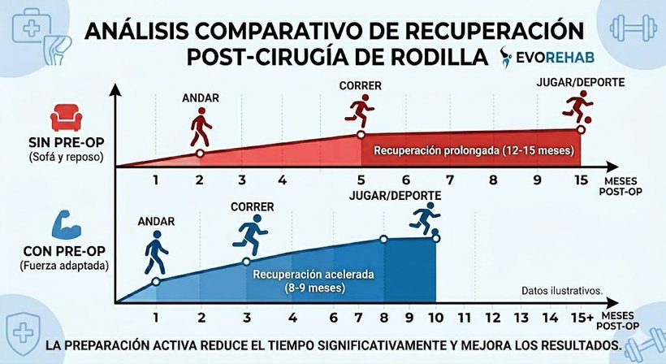

Qué hacer antes de operarte para acelerar el proceso después
Eduardo Estévez@edu.rehab
Especialista en readaptación de lesiones de rodilla
Ciencias de la A.F. y el deporte · UAH
Experto universitario PT · Uni. LaSalle
Múltiples formaciones de referentes del sector
¿Por qué el éxito de tu operación se decide ANTES de entrar a quirófano?
Si tienes fecha para tu cirugía de rodilla, hay un error que debes evitar a toda costa: sentarte en el sofá a esperar el día de la operación, pensando que el cirujano lo solucionará todo.
El éxito de tu recuperación no se decide en la mesa de operaciones; se decide las semanas anteriores, en el gimnasio.
Entrar al quirófano con una pierna inflamada, sin movilidad y con un cuádriceps debilitado por el reposo es una garantía de complicaciones. Multiplica la rigidez post-operatoria, frena la cicatrización y duplica los meses de rehabilitación. El cirujano repara la estructura interna, pero si el motor (tu musculatura) llega apagado, la máquina no arrancará.
La ciencia demuestra que realizar un programa pre-operatorio cambia por completo las reglas del juego.
Llegar con una articulación fuerte, estable, móvil, y sin inflamación es lo que permite reducir los plazos a la mitad, disminuir el dolor tras la cirugía y salir del hospital caminando mucho antes... Por no hablar de volver a saltar y correr. Tu operación no es el punto de partida; es la mitad del camino.

Los 4 Criterios Clínicos para entrar a quirófano con garantías
Para asegurar que tu tiempo de recuperación post-cirugía se reduzca drásticamente, tu rodilla debe cumplir de forma estricta con estos 4 indicadores objetivos antes del día de la operación. En el sector deportivo lo llamamos cumplir con los Criterios de Pre-Op:
Extensión máxima (0°) y flexión de al menos 110-120°
La articulación debe entrar con rango completo. Si no puedes estirar la pierna por completo o flexionarla al menos hasta superar los 110º (un ángulo menor a una sentadilla paralela), el cirujano trabajará con una articulación rígida. Esto duplica la producción de tejido cicatrizal interno (artrofibrosis) tras la operación.
Ausencia de inflamación activa
La rodilla no debe tener líquido articular libre ni presentar un volumen visiblemente mayor que la sana. Operar un tejido ya inflamado dificulta la tarea del cirujano, bloquea los mecanismos de curación, multiplica el dolor post-operatorio...
Capacidad de carga con ejercicios clave
Deberás ser capaz de hacer ejercicios de gimnasio como prensa y sentadilla sin limitaciones, sin dolor, y con una carga como mínimo del 75-100% de tu peso corporal. Para ello, se recomienda hacer un programa de fuerza de al menos 8-12 semanas antes de la cirugía. Si el músculo entra débil a quirófano, sale igual o peor...
Déficit de fuerza entre piernas menos al 15-10%
La diferencia de fuerza entre tu pierna lesionada y tu pierna sana debe ser mínima. Si tu pierna sana levanta 50 kg en la máquina de extensiones y la lesionada apenas tolera 25-30 kg... entras al quirófano con una asimetría peligrosa. Si entras así a quirófano, luego la diferencia se notará más incluso
Muy atent@
Las personas que vas a ver a continuación, han pasado por esta situación.
Les dijeron que debían operarse, y así lo hicieron, pero no sin antes pasar por un preoperatorio de bastantes semanas con nosotros, que les permitió llegar en las mejores condiciones posibles a la cirugía, tanto física, como mentalmente.
Si pinchas en cada una de las imagenes, te llevará a su caso en YouTube, donde te hacen un resumen de su historia en solo 3 minutos
A Nerea le dijeron que debía quedarse quieta antes de la cirugía, que estuviera 8 semanas parada. Ella no hizo caso, nos escribió, empezó un pre-op de unas 8 semanas, y consiguió volver a su primer entrenamiento con el equipo sólo 3 meses tras operarse
Lucio se enteró que tenía el LCA roto y quiso evitar la cirugía, empezando un tratamiento conservador.
Finalmente, se decidió por operar porque no se encontraba del todo seguro.
3 meses después de operarse, va el doble de rápido que otros gracias a haber llegado a la cirugía en tan buenas condiciones
A Luzía le dijeron que hiciera fisio y reposo, pero ella sabía que si quería recuperarse, tenía que hacer algo de forma activa por su cuenta.
Nos escribió, 6-8 semanas de pre-op, y a los 4-5 meses tras operarse ya estaba de vuelta en Crossfit con sus amigos, y a los 7 meses escalando en rocódromo
¿Quieres entrar al quirófano con garantías de éxito?
No dejes tu futuro e independencia en manos de la suerte o del reposo pasivo en el sofá.
Si tienes programada una cirugía de rodilla (LCA, menisco, u otra) para los próximos meses y quieres que analicemos tu caso para diseñar tu plan de fuerza pre-operatorio personalizado, mándame un mensaje privado en Instagram con la palabra
“BISTURÍ”
o pincha en este enlace y nos reunimos directamente para ver qué podrías y deberías hacer en tu caso concreto los próximos meses